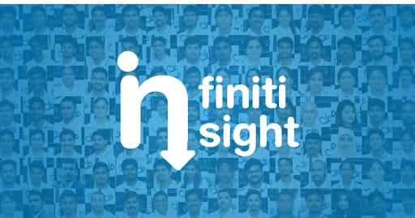

10 ways to be professional at workplace:
We often hear how important it to behave "professionally" in the workplace. If you want to get
ahead, be taken seriously, and have your boss think of you as an asset to the team, doing things in a
professional way is vital.
But what exactly do employers mean by this term? Surely it's enough to do your job well and show
up on time consistently. Or are there other things expected of you if you want to be viewed as being
professional?
Avoid Being Unprofessional
Your employer may not tell you exactly their own view of what being professional means. But we all
know from experience how to get labelled as "unprofessional". By finishing tasks or projects late, for
instance. Being unprepared when attending meetings. Spending time gossiping at work.
Other ways to be seen as unprofessional? Treat people with disrespect. Steal their thunder by
using their ideas without giving them credit. Say one thing then do the complete opposite. Break promises
regularly.
10 Ways To Be Professional
Acting like a professional really means doing what it takes to make others think of you as
reliable, respectful, and competent. Depending on where you work and the type of job you have, this can take
on many different forms.
There are, however, quite a few common traits when it comes to being
professional. This includes the following:
1. Competence: You're good at what you do and you have
the skills and knowledge that enable you to do your job well.
2. Reliability: People can depend on
you to show up on time, submit your work when it's supposed to be ready, etc.
3. Honesty: You tell
the truth and are upfront about where things stand.
4. Integrity: You are known for your consistent
principles.
5. Respect For Others: Treating all people as if they mattered is part of your
approach.
6. Self-Upgrading: Rather than letting your skills or knowledge become outdated, you seek
out ways of staying current.
7. Being Positive: No one likes a constant pessimist. Having an upbeat
attitude and trying to be a problem-solver makes a big difference.
8. Supporting Others: You share
the spotlight with colleagues, take time to show others how to do things properly, and lend an ear when
necessary.
9. Staying Work-Focused: Not letting your private life needlessly have an impact on your
job, and not spending time at work attending to personal matters.
10. Listening Carefully: People
want to be heard, so you give people a chance to explain their ideas properly.
The Professional Advantage
The more you put into practice the 10 points listed above, the better your chances will be to
create a positive reputation for yourself. This can ultimately translate into raises and promotions, chances
to work on more assignments that you enjoy, less likelihood of being downsized when layoffs are being
considered, and the respect of peers and senior management.
The more you put into practice the 10
points listed above, the better your chances will be to create a positive reputation for yourself. This can
ultimately translate into raises and promotions, chances to work on more assignments that you enjoy, less
likelihood of being downsized when layoffs are being considered, and the respect of peers and senior
management.
Client Closure

Trimex Sands is India's top specialty value chain provider for industrial minerals. Founded in 1985, Trimex's global delivery network which delivers products such as Barite, Bentonite, Iron Ore, Feldspar, Bauxite, Ball Clay and Kaolin, among others, to the world's leading Oil Drilling, Ceramic, Glass, Construction, Energy, Steel, and Fertilizer companies.
Client closed by Sales Team.
Life at Infiniti
"
"Infiniti is the perfect place for the freshers to Work & Learn. In
Infiniti lots of opportunities to learn domain, technologies, business,
culture, good habits and many more skills. I learned a lot during that
past ten years period and still learning. Infiniti provides me an
identity in my family life & society, I would feel like my home. Gained
an industry knowledge & business experience while working in
Infiniti. Excellent perks and an extremely helpful management. Infiniti
gives me the freedom to decide how you would like to go about the
project. Friends (co-workers) & management have helped me a lot
and aided when I needed. Thank you so much to all for giving a
wonderful time to share my experience in INFINITI."
"
- Mr. Senthilnathan
Star Profile

Mrs. Amala Mary
Business Analyst
Inspiration: Mom, Dr. APJ
Memorable milestone: Winning Infiniti
Intrapreneurship
One thing that I learned hard way: Cooking Biriyani
Work-life balance: Planning my works
The best advice that I got forever: If you think of
buying a car, target buying a Flight then you end up
buying a car.
Did You Know:
1. The word "TAX" is from the Latin taxo, meaning "I estimate". Only 3% of Indians pay income tax.
2. India had the second highest total tourism GDP contribution in Asia-Pacific, behind China in 2016.
3. Chail Cricket Ground in Chail, Himachal Pradesh, is the highest cricket ground in the world.
4. Mawlynnong in Meghalaya is the cleanest village in Asia.
5. According to the Guinness Book of World Records, India ranks third behind the USA and the UK in the number of
records claimed each year.
Our Employees
Work Anniversary :
● Selvendran (Sr. Automation Quality) - 2 Years
● Senneth Mathen (Travel Counselor) - 1 Year
● Shalini (HR - Manager - BD) - 1 Year
Infiniti CONGRATULATES them for being a part of the growth story of the company.
Birthdays of the week :
● 22.12.2017 - Bharathwaj (Trainee Operation)
● 23.12.17 - Vivin L - Key Account Manager (BD)
● 25.12.17 - Madhuraraman K - Software Engineer
● 28.12.17 - Chintan Tejani (Travel Consultant - Operation)
Infiniti wishes them a very HAPPY BIRTHDAY!
Stay tuned with the next Edition of Infiniti Insight for more updates.....